05:00
Lecture 7: HTML Theming in a Quarto Website
BAA1028 - Workflow & Data Management
Damien Dupré
Overview
HTML documents rendered with Quarto use Bootstrap 5 by default. This can be disabled or customized via the theme option:
Overview
Quarto includes 25 themes from the Bootswatch project. Available themes include:
default, cerulean, cosmo, cyborg, darkly, flatly, journal, litera, lumen, lux, materia, minty, morph, pulse, quartz, sandstone, simplex, sketchy, slate, solar, spacelab, superhero, united, vapor, yeti, zephyr
Use of any of these themes via the theme option. For example:
You can also customize these themes or create your own new themes.
Basic Options
If you are using a Bootstrap theme, there are a set of options you can provide in document metadata to customize its appearance. These include:
max-width, mainfont, fontsize, fontcolor, linkcolor, monofont, monobackgroundcolor, linestretch, backgroundcolor, margin-left, margin-right, margin-top, margin-bottom
See for details: HTML Themes Basic Options
Basic Options
For example. here we set the font-size a bit larger and specify that we want a bit more space between lines of text:
Dark Mode
In addition to providing a single theme for your html output, you may also provide a light and dark theme. For example:
When providing both a dark and light mode for your html output, Quarto will automatically create a toggle to allow your reader to select the desired dark or light appearance.
Dark Mode
Setting the above themes in your _quarto.yml results in both a dark and light version of your output being available. For example:
Flatly Themed Output

Darkly Themed Output

Theme Options
You can do extensive customization of themes using Sass. Bootstrap defines over 1,400 Sass variables that control fonts, colors, padding, borders, and much more. You can see all of the variables here:
https://github.com/twbs/bootstrap/blob/main/scss/_variables.scss
Sass theme files can define both variables that globally set things like colors and fonts, as well as rules that define more fine grained behavior.
To customize an existing Bootstrap theme with your own set of variables and/or rules, just provide the base theme and then your custom theme file(s):
Theme Options
Your custom.scss file might look something like this:
Note that the variables section is denoted by the /*-- scss:defaults --*/ comment and the rules section (where normal CSS rules go) is denoted by the /*-- scss:rules --*/ comment.
Exercise: Bootstrap Theme
Have a look at the different themes from the Bootswatch project.
Add at least 1 theme to your website. You can also choose a light and dark theme:
Use Sass
What is Sass?

- Sass is a CSS extension (provides additional features, like variables)
- Sass is a CSS preprocesser (converts Sass code into standard CSS, which is a critical step because browsers can’t interpret Sass and can interpret CSS)
Sass Reduces Repetition
Sass extends existing CSS features in a number of exciting ways, but importantly reduces repetition.
For example, let’s say you’re building a website / web page that uses three colors:
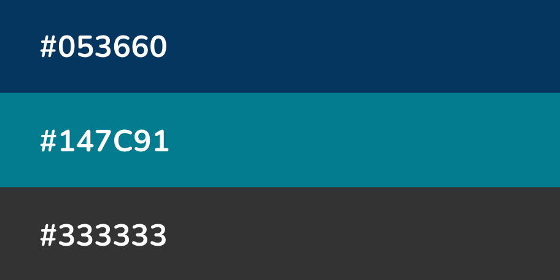
You might imagine how often you’ll need to type those HEX codes out as you developing your stylesheet…it can get annoying rather quickly.
Sass Reduces Repetition
Or just look at my website:
Example stylesheet (.scss)
// Headings
$headings-color: #E84E0F !default;
// Text colour
$body-color: #2A2E46 !default;
$body-bg: #eeeeee !default;
// Navbar
$navbar-bg: #2A2E46 !default;
$navbar-fg: #eeeeee !default;
// hover on navbar
.navbar-expand-lg .navbar-nav .nav-link:hover {
color: #E84E0F;
}
.navbar-expand-lg .navbar-nav .nav-link.active {
color: #eeeeee;
}Define Sass Variables
Sass allows us to define variables (in the form $var-name: value;) for our colors, which we can reference instead of writing out their HEX codes each time. This makes your stylesheet more readable and easier to update (e.g. only need to update HEX codes in one spot, not multiple!).
Example stylesheet (.scss)
Note: Sass has two syntaxes – SCSS syntax (.scss), shown above, is the most common. It stands for Sassy Cascading Stylesheets and also the SASS syntax (.sass)
Quarto compiles Sass automatically
Web browsers can interpret CSS ( .css) but not Sass ( .scss or .sass).
Typically, you’d need to compile (i.e. convert) Sass to CSS, then link the resulting .css file in your HTML.
Lucky for us, Quarto compiles the contents of a .scss file into CSS without any extra steps – all we need to do is link to a .scss file directly in our website’s _quarto.yml.
Create .scss File
- Create a
.scssfile in your repo’s root directory using the Terminal:
- Add the
/*-- scss:defaults --*/region decorator to the top ofstyles.scss(required by Quarto) – you’ll write all your Sass variables underneath this.
Adding the region decorator as written above is critical! Quarto won’t recognize your .scss file without it.
Create .scss File
- Apply your
styles.scssfile to your website using thethemeoption:
Note: I’ve also removed the css: styles.css option that was included by default, since I’ll be writing all my sass and css in this single styles.scss file
Define colors variables
- I like to start by defining the colors I want to use throughout my site. For example:
You can also define values with units, e.g. $my-font-size: 25px;.
Note: In .scss files, // denote single line comments. Multi-line comments start with /* and end at the next */.
Define Quarto Sass variables
- Quarto provides a list of pre-defined Sass Variables, which control the appearance of various website elements and that can be specified within
.scssfiles. We can assign our newly-minted color variables as values to Quarto Sass variables to easily update things like the background color, navbar & footer colors, hyperlink color, and more.
Define Quarto Sass variable
Use the syntax $quarto-var: $your-color-var;.
styles.scss
/*-- scss:defaults --*/
// Colors
$dark-green: #858E79;
$light-green: #D1D9CE;
$cream: #FDFBF7;
$gray: #64605f;
$purple: #9158A2;
$orange: #ad7237;
// Base document colors
$navbar-bg: $cream; // navbar
$navbar-fg: $dark-green; // navbar foreground elements
$navbar-hl: $purple; // highlight color when hovering over navbar links
$body-bg: $light-green; // page background
$body-color: $gray; // page text
$footer-bg: $cream; // footer
$link-color: $purple; // hyperlinks
// Inline code
$code-bg: $cream; // inline code background color
$code-color: $purple; // inline code text colorSass Variables
The following Sass Variables can be specified within SCSS files (note that these variables should always be prefixed with a $ and are specified within theme files rather than within YAML options)
Colors
Fonts
Code Blocks
Code Annotation
You can customize the colors used to highlight lines when code annotation is used:
| Variable | Notes |
|---|---|
$code-annotation-higlight-color |
The color used as a border on highlighted lines. |
$code-annotation-higlight-bg |
The color used for the background of highlighted lines. |
Code Copy
You can also customize the colors of the button which appears for code-copy: true with the following variables:
| Variable | Notes |
|---|---|
$btn-code-copy-color |
The color used for the copy button at the top right of code blocks. |
$btn-code-copy-color-active |
The hover color used for the copy button at the top right of code blocks. |
Inline Code
| Variable | Notes |
|---|---|
$code-bg |
The background color of inline code. Defaults to a mix between the body-bg and body-color. |
$code-color |
The text color of inline code. Defaults to a generated contrasting color against the code-bg. |
Table of Contents
| Variable | Notes |
|---|---|
$toc-color |
The color for table of contents text. |
$toc-font-size |
The font-size for table of contents text. |
$toc-active-border |
The left border color for the currently active table of contents item. |
$toc-inactive-border |
The left border colors for inactive table of contents items. |
Layout
| Variable | Notes |
|---|---|
$content-padding-top |
Padding that should appear before the main content area (including the sidebar, content, and TOC. |
Navigation
| Variable | Notes |
|---|---|
$navbar-bg |
The background color of the navbar. Defaults to the theme’s $primary color. |
$navbar-fg |
The color of foreground elements (text and navigation) on the navbar. If not specified, a contrasting color is automatically computed. |
$navbar-hl |
The highlight color for links in the navbar. If not specified, the $link-color is used or a contrasting color is automatically computed. |
Navigation
| Variable | Notes |
|---|---|
$sidebar-bg |
The background color for a sidebar. Defaults to $light except when a navbar is present or when the style is floating. In that case it defaults to the $body-bg color. |
$sidebar-fg |
The color of foreground elements (text and navigation) on the sidebar. If not specified, a contrasting color is automatically computed. |
$sidebar-hl |
The highlight color for links in the sidebar. If not specified, the $link-color is used. |
Navigation
| Variable | Notes |
|---|---|
$footer-bg |
The background color for the footer. Defaults to the $body-bg color. |
$footer-fg |
The color of foreground elements (text and navigation) on the footer. If not specified, a contrasting color is automatically computed. |
Callouts
| Variable | Notes |
|---|---|
$callout-border-width |
The left border width of callouts. Defaults to 5px. |
$callout-border-scale |
The border color of callouts computed by shifting the callout color by this amount. Defaults to 0%. |
$callout-icon-scale |
The color of the callout icon computed by shifting the callout color by this amount. Defaults to 10%. |
Callouts
| Variable | Notes |
|---|---|
$callout-margin-top |
The amount of top margin on the callout. Defaults to 1.25rem. |
$callout-margin-bottom |
The amount of bottom margin on the callout. Defaults to 1.25rem. |
Bootstrap Variables
In addition to the above Sass variables, Bootstrap itself supports hundreds of additional variables. You can learn more about Bootstrap’s use of Sass variables or review the raw variables and their default values.
Combining themes
You also do not need to create a theme entirely from scratch! If you like parts of a pre-built Bootswatch theme, you can modify it by layering on your desired updates using your own custom styles.scss file.
For example, let’s say I love everything about the pre-built cosmo theme, and only want to update the navbar background color to orange. My files might look something like this:
Our resulting website, which is primarily themed using cosmo, but with a custom orange navbar.
Exercise: Sass Variables
- Create a
.scssfile in your repo’s root directory using the Terminal:
Add the
/*-- scss:defaults --*/decorator to the top ofstyles.scss;Apply the path to your
styles.scssfile using thethemeoption;In your
styles.scssfile, define 3 colours and assign them to the variables:
$navbar-bg:$navbar-fg:$body-bg:
10:00
Explore Google Fonts
Fonts are just as important as colour in expressing yourself and your brand. You should absolutely be importing and using a different (more exciting) font family(ies) than the default.
Browse the many available Google fonts at https://fonts.google.com/ and choose 2 fonts. Click on the Filters button in the top left corner of the page to help narrow your choices.
They can easily be applied by following these 3 steps
Select Fonts
- Select a Google font family by clicking the blue Get Font button in the top right corner of the page, which adds your font family to your “bag.” You can add as many font families to your bag as you’d like to import – here, we select both Nunito and Sen.
Explore the Nunito font family, which is available in a number of styles (i.e. different weights and italic):
View all of your selected font families and get your embed code from your shopping bag:
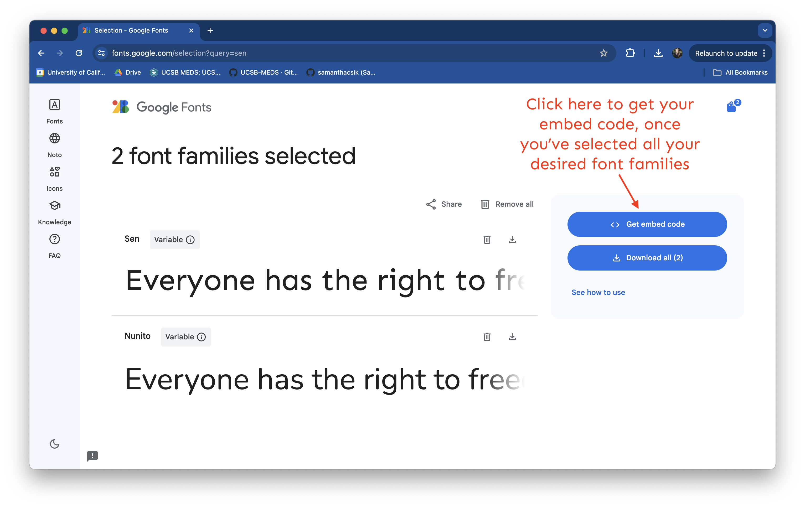
Select Fonts
- Click Get embed code, then choose the @import radio button (beneath the Web menu option), which will provide your import code chunk. Copy everything between the
<style> </style>tags (starting with@importand ending with;) to your clipboard.
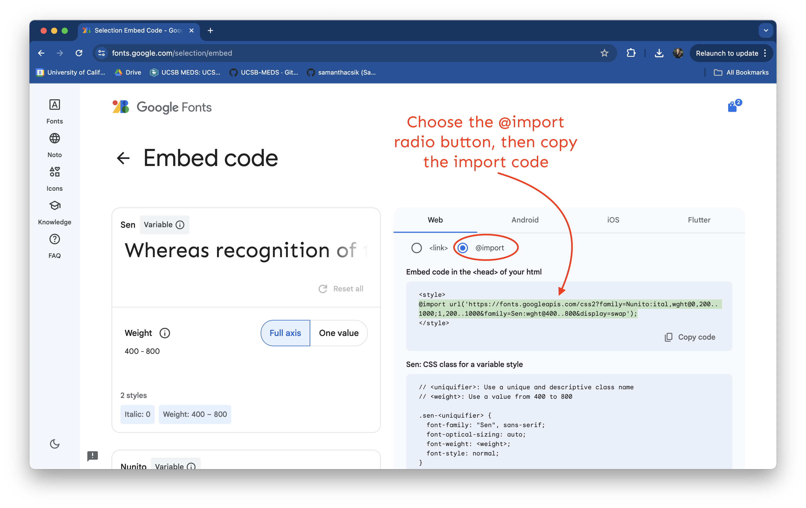
Select Fonts
- Paste the import code into
styles.scss(I always place this at the top of my stylesheet, beneath/*-- scss:defaults --*/).
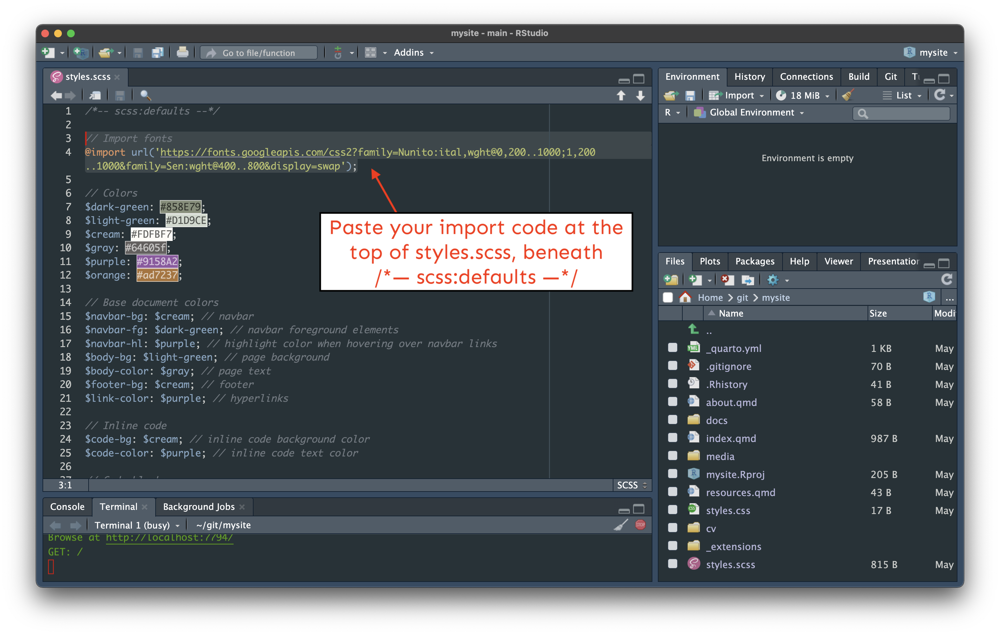
Select Fonts (gif)
If you’re like me, you might find a gif of the whole process helpful:
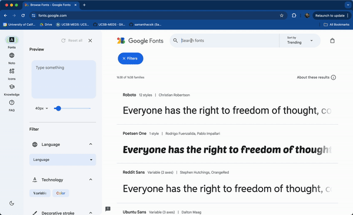
Import fonts
Your styles.scss should now similar to this:
styles.scss
/*-- scss:defaults --*/
// Import Google fonts
@import url('https://fonts.googleapis.com/css2?family=Nunito:ital,wght@0,200..1000;1,200..1000&family=Sen:wght@400..800&display=swap');
// Colors
$dark-green: #858E79;
$light-green: #D1D9CE;
$cream: #FDFBF7;
$gray: #64605f;
$purple: #9158A2;
$orange: #ad7237;
// Base document colors
$navbar-bg: $cream; // navbar
$navbar-fg: $dark-green; // navbar foreground elements
$navbar-hl: $purple; // highlight color when hovering over navbar links
$body-bg: $light-green; // page background
$body-color: $gray; // page text
$footer-bg: $cream; // footer
$link-color: $purple; // hyperlinks
// Inline code
$code-bg: $cream; // inline code background color
$code-color: $purple; // inline code text color
// Code blocks
$code-block-bg: $cream; // code block background color Set mainfont
The easiest way to apply a main (i.e. default) font for all text elements on your website is in _quarto.yml using the mainfont option:
All text elements on our website are now Nunito
Apply other fonts?
Cool, but what about applying our second font, Sen?
Great question, and hang tight! This requires some CSS, which is the perfect segue into our next section.
Apply other fonts?
If you plan to use multiple fonts, you can create Sass variables for each font type, then use those variables as you construct your CSS rules. For example, this slide deck uses three fonts (Sanchez, Montserrat, and Roboto Mono):
// Import fonts
@import url('https://fonts.googleapis.com/css2?family=Lato&family=Montserrat&family=Nunito+Sans:wght@200&family=Roboto+Mono:wght@300&family=Sanchez&display=swap');
// Fonts
$font-family-serif: 'Sanchez', serif;
$font-family-sans-serif: 'Montserrat', sans-serif;
$font-family-monospace: 'Roboto Mono', monospace; You must import a higher font weight (e.g. 800), in addition to your standard “regular” weight, if you wish to bold text – even bolding text using markdown syntax (e.g. **this text is bold**) will not work unless a higher font weight style is imported).
Exercise: Google Font
Select the Montserrat Google font family from https://fonts.google.com;
Click Get embed code, then choose the @import radio button and copy everything between the
<style> </style>tags;Paste the import code into
styles.scssApply it as a main font for all text elements on your website is in
_quarto.ymlusing themainfontoption.
05:00
CSS + Quarto
Quarto comes with styles.css
A styles.css file is automatically generated when you create a Quarto site.
We can write our CSS rules in styles.css, but alternatively, we can write them directly in our styles.scss file (remember, you can write CSS in a .scss file but you can’t write Sass in a .css file).
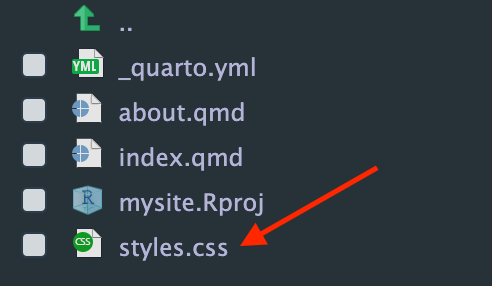
You can delete styles.css if you don’t plan to use it, or leave it be (it won’t impact your Quarto site since it’s not linked as our stylesheet in _quarto.yml).
SCSS Rules Divider
To start defining CSS rules in styles.scss you first need to add the /*-- scss:rules --*/ region decorator beneath your Sass variables section (this is important! your CSS won’t be recognized without this region decorator in place):
Next, we’ll walk through some examples of how to modify your site with your own CSS rules.
Write a <h1> and <h2> grouping selector
styles.scss
Note: We don’t need to make any changes to the HTML (in about.qmd and resources.qmd) since this grouping selector targets all <h1> and <h2> elements across the site. If an element on any of the pages has either of those tags, it will get styled according to the declaration(s) included in our CSS rule.
Preview grouping selector
Our updated <h1> and <h2> elements should now look something like this:
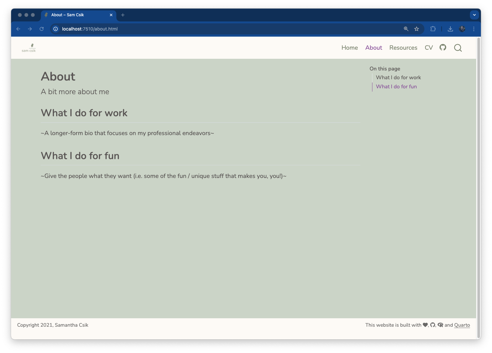
No CSS styling on h1 and h2 headers
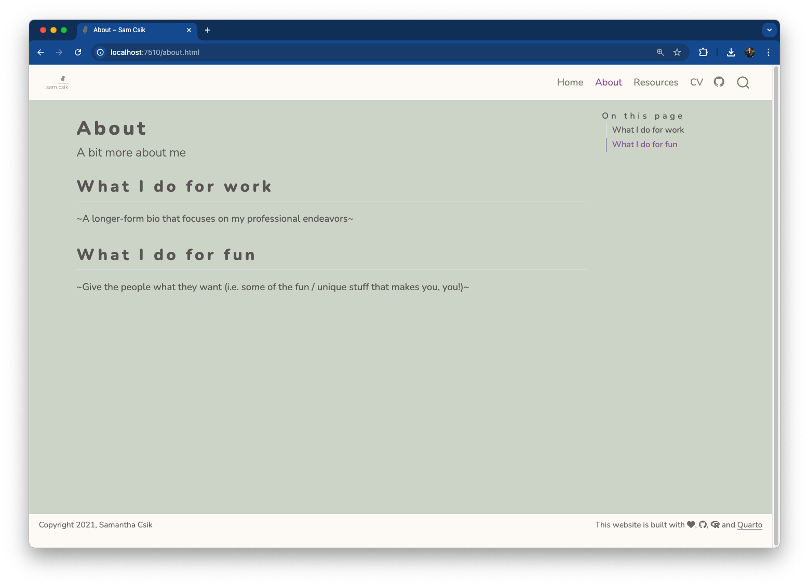
With CSS styling on h1 and h2 headers
Predefined ‘title’ class
All <h1> elements are also given the class, title (e.g. <h1> class="title">All of my favorite resources!</h1>). This means that the Quarto framework has already defined a class selector called .title and applied that class to the above elements.
Predefined ‘title’ class
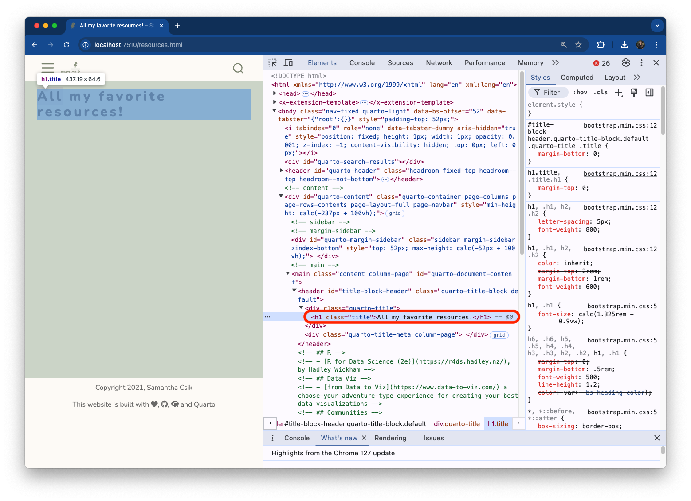
Modify ‘title’ class
We can modify existing class (or ID) selectors
For example, let’s make any text elements that are assigned the class, .title, the color maroon:
Maroon titles
Check out your new maroon titles.
Similarly, you can modify the .anchored class that we saw was, by default, applied to our <h2> elements.
Write your own class selectors
Let’s first create two different classes: one to center text on the page, and another to color text orange:
Write your own class selectors
These styles can be applied as follow:
resources.qmd
---
title: "All my favorite resources!"
---
<h1>this is an `<h1>` element</h1>
<h1 class="title">this is an `<h1>` element of class `title`</h1>
<p>this is a `<p>` element</p>
<p class="title">this is a `<p>` element of class `title`</p>
--- # three dashes is markdown syntax for creating a horizontal line across your page
<p class="orange-text">This paragraph is orange.</p>
<p class="center-text">This paragraph is centered.</p>
<p>This paragraph has no styling.</p>
<h2 class="center-text">This level-2 header is centered</h2>Oranged / centered text
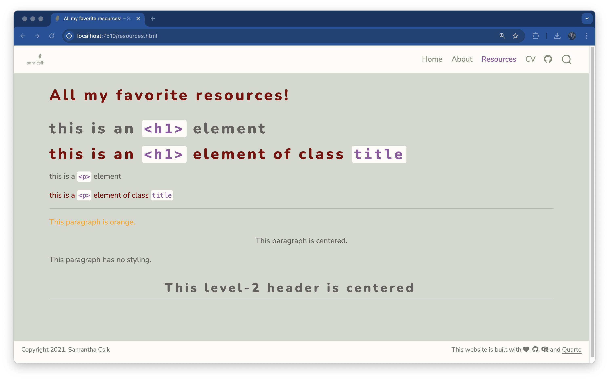
Quarto Syntax
Quarto also provides its own syntax for applying classes to elements
You can create both divs (block-level regions of content) and spans (inline content) using Quarto’s syntax. For example:
Divs
Mix & match styles
You can mix and match syntaxes in .qmd files
An example:
A couple more styling tips
More than 1 font family
Recall that we:
imported two font families from Google Fonts – Nunito and Sen (though you can import and use as many as you’d like), and
set Nunito as our
mainfontin_quarto.yml(which applies Nunito as the default font for all text elements).
To also apply Sen, we can:
create a Sass variable for Sen, then
write a CSS rule(s) to apply Sen to our desired text elements.
font-family value
Look for the code chunk titled, Sen: CSS class for a variable style on the Embed code page. We’ll want to grab the value specified after the font-family property (here, that value is, "Sen", sans-serif;).
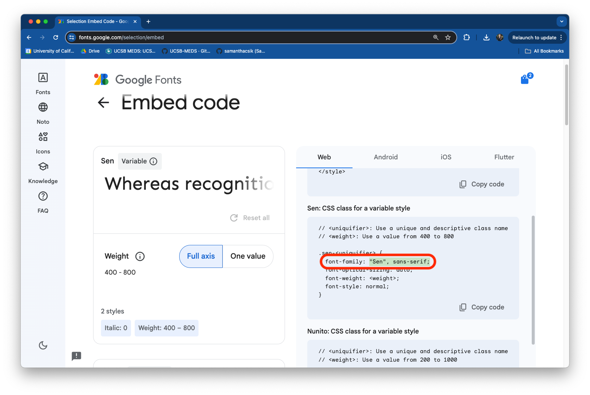
Create Sen Sass / CSS
Here, we create a CSS grouping selector, which applies Sen to any HTML header (<h1> - <h6>):
styles.scss
/*-- scss:defaults --*/
// Import fonts
@import url('https://fonts.googleapis.com/css2?family=Nunito:ital,wght@0,200..1000;1,200..1000&family=Sen:wght@400..800&display=swap');
// Fonts
$sen: "Sen", sans-serif;
/*-- scss:rules --*/
h1, h2, h3, h4, h5, h6 {
font-family: $sen;
}
h1, h2 {
letter-spacing: 5px;
font-weight: 800;
}Sen rendered
Sen is now applied to all of our website headers!
Resize logo
Final touch: resize our logo
Let’s add a CSS rule to increase the size of our logo. Be sure to add this rule beneath your /*-- scss:rules --*/ region decorator, and note that you may need to adjust the max-height value to best suit your own personal logo:
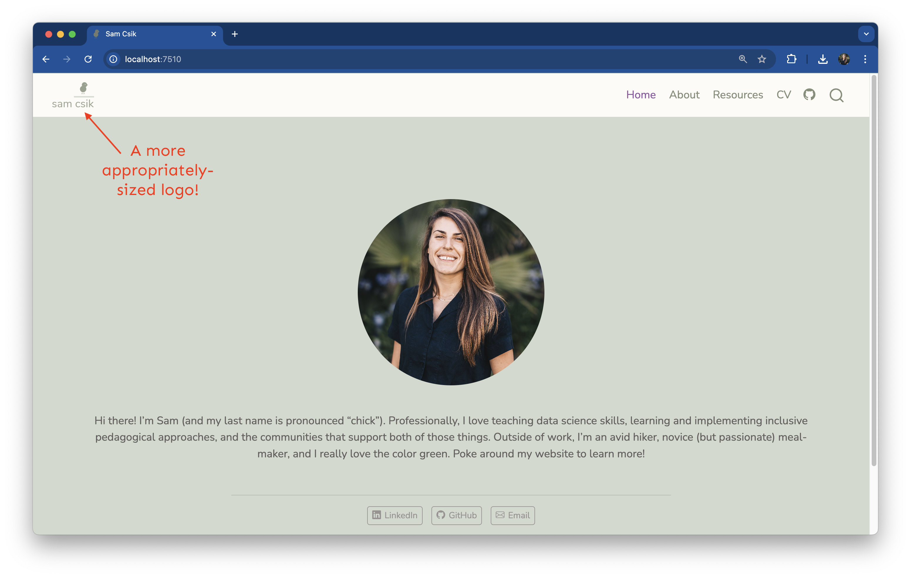
References
Huge thanks the following people who have generated and shared most of the content of this lecture:


Thanks for your attention and don’t hesitate to ask if you have any questions!
@damien_dupre
@damien-dupre
https://damien-dupre.github.io
damien.dupre@dcu.ie